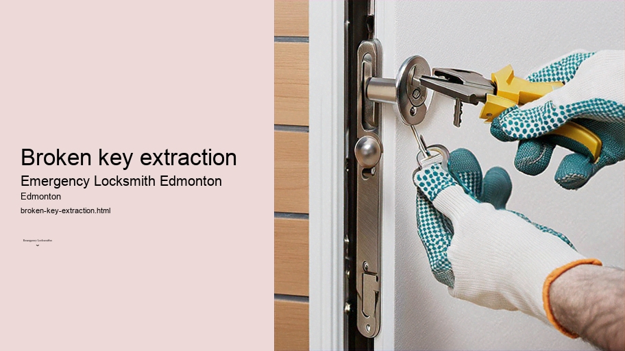

News
24/7 Emergency Locksmith Services
24/7 Emergency Locksmith Services
Emergency Locksmith Services
Residential lockout assistance
Automotive lockout services
Broken key extraction
Emergency lock repair and replacement
Commercial Locksmith Solutions in Edmonton
Commercial Locksmith Solutions in Edmonton
Highsecurity lock installations
Master key systems and rekeying services
Access control system integration
Panic bar installation and maintenance
Residential Locksmith Services in Edmonton
Residential Locksmith Services in Edmonton
Home lockout response
Rekeying existing locks for homes
Installation of new locks and deadbolts
Repairing or replacing residential locks
Automotive Locksmith Services in Edmonton
Automotive Locksmith Services in Edmonton
Car key duplication and replacement
Transponder key programming
Ignition repair and replacement services
Vehicle trunk opening
About Us

Broken key extraction
>
High-security lock systems Edmonton
Broken Key Extraction: Navigating the Locksmith's Challenge
Picture this scenario: you're in a hurry, trying to unlock your door, but as you turn the key with a bit more force than usual, it snaps, leaving a piece lodged inside the lock. Frustration mounts — not only are you locked out, but now there's also a broken key to deal with. This is where the art of broken key extraction comes into play.
Broken key extraction is an essential skill for any locksmith and an invaluable service for those who have encountered this unfortunate event. It's a precise process that requires patience, expertise, and the right tools to ensure that the lock isn't damaged further while removing the stubborn broken piece of metal.
The process begins with an assessment of the situation. The type of lock and position of the broken key dictate the approach. A variety of specialized tools can be utilized such as needle-nose pliers, extraction kits comprising hooks and spiraled extractors or even a small jigsaw blade.
Door lock installation Edmonton
Each tool has its own method of gripping or hooking onto the broken fragment to gently coax it out.
One common technique involves inserting a thin metal piece along either side of the broken key fragment within the lock mechanism. By carefully maneuvering these extractor tools around the jammed piece, locksmiths try to catch onto grooves or cuts in the key so they can slide it out without causing damage.
Precision is paramount during this procedure; too much force or haste could result in damage to internal components rendering the entire lock unusable and requiring replacement which would incur additional costs and time.
Locksmiths often rely on their tactile sense when performing extractions because they must feel their way through mostly blind maneuvers inside tiny spaces of complex mechanisms.
Emergency lockout service Edmonton
Experience plays a significant role here because seasoned professionals develop a keen sense for how much pressure is just enough to retrieve parts without inflicting harm on delicate pins and tumblers within locks.
High-security lock systems Edmonton
In some cases where standard methods fail due perhaps to keys breaking off flush with entry point or other complications arising from high-security locks featuring anti-tampering mechanisms alternative solutions may need be explored such as partial disassembly or even destruction & subsequent replacement if all else fails although these are last resorts generally avoided unless absolutely necessary given potential added cost & inconvenience involved.
Prevention is better than cure however & regular maintenance can help avoid situations necessitating broken key extractions altogether like ensuring keys aren't worn down over time which makes them more susceptible snapping keeping locks well lubricated avoiding excessive force while operating them etcetera but when accidents happen having access skilled professional capable navigating challenge extracting pesky fragments without exacerbating problem provides peace mind relief frustration associated being locked out due mishap like snapped-off key stuck defiantly inside one’s lock mechanism waiting patiently be freed by careful hands equipped knowledge required masterfully remove it leaving behind functioning security barrier once again accessible rightful owner.
Check our other pages :
Home lockout response
Commercial Locksmith Solutions in Edmonton
Residential Locksmith Services in Edmonton
Frequently Asked Questions
How quickly can an emergency locksmith in Edmonton arrive to extract a broken key?
Emergency locksmiths in Edmonton typically offer quick response times, often arriving within 30 minutes to an hour, depending on your location and the time of day.
What methods do locksmiths use to extract a broken key from a lock?
Locksmiths may use specialized tools such as broken key extractors, hook picks, or key extraction pliers. They might also employ techniques like lubrication or gentle tapping to loosen the broken piece before extraction.
Will the lock be damaged during the broken key extraction process?
Professional locksmiths are trained to extract keys without damaging the lock. However, if the key is severely jammed or if the lock was already compromised, there might be some unavoidable minor damage.
Can a locksmith make a new key after extracting the broken one?
Yes, once the broken key is extracted, locksmiths can typically cut a new key using either the broken pieces (if available) or by decoding the lock cylinder.
What should I do to prevent my keys from breaking in locks in the future?
To prevent keys from breaking, ensure that youre using properly cut keys that fit well in your locks. Avoid using excessive force when turning keys and consider having duplicate keys made. Regular maintenance of locks can also reduce wear and tear on both keys and locks.